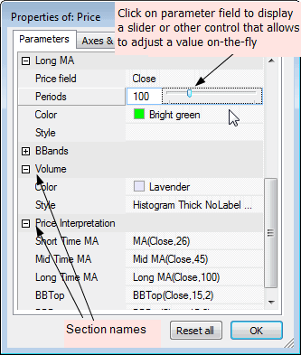
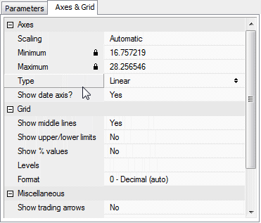

This window allows the user to modify parameters specified in the AFL formula via Param, ParamStr, ParamColor, ParamStyle, ParamField, ParamToggle, ParamDate, ParamTime, ParamList functions and also to adjust axes and grid settings.
It is accessible via chart context menu (right-click the mouse over the chart pane to see the context menu); choose Parameters and a small window with parameter list will appear. To edit parameter value simply click on the item value field as shown in the picture. Then, depending on the type of the parameter, appropriate control(s) will appear.
For example, if a given parameter is a string then a text field will appear, and if a given parameter is a color, then a color-picker control will allow you to change the color.
When editing numeric parameters you can adjust the value by either entering the value into the edit field or by moving a slider control. To show the edit field, click on the number itself (marked with blue color in the picture below). To show a slider control, click next to the number (right-hand side).
If a given parameter is a number, then a slider or the edit field will be shown as in the picture below:

You can move the slider using the mouse, the <- -> cursor keys and mouse wheel. As changes are made, the underlying chart is immediately refreshed, giving great feedback to the user.
Parameters are grouped into "sections". Sections represent parts of the code surrounded by _SECTION_BEGIN/_SECTION_END markers. To learn more about this, check Tutorial: Using drag-and-drop interface.
At any time you can press Reset all button, which will reset all parameters to default values.
For more information on using parameters please read Tutorial: Using colors, styles, titles and parameters in the indicators and Tutorial: Using drag-and-drop interface.
The Parameters window also allows you to control axes and grid appearance as well as some other per-chart settings. These controls are available in the second Axes & Grid tab as shown below:

The following options are available: